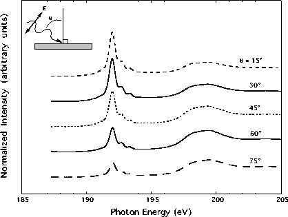

Figure 2: Angular dependence of the B 1s
absorption spectra for the iBN film. The inset shows that q
is the polar angle between the incident x-ray wavevector and
the normal to the surface of the film. The spectra have been
vertically separated for ease of comparison. The p* features
are largest near normal incidence and decrease in normalized
intensity as the angle between the incident x-ray beam and
the surface normal increases.